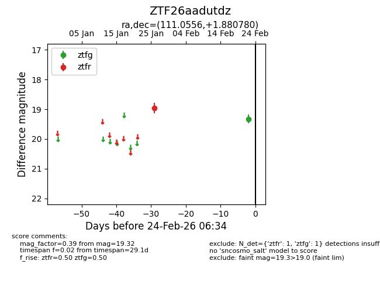
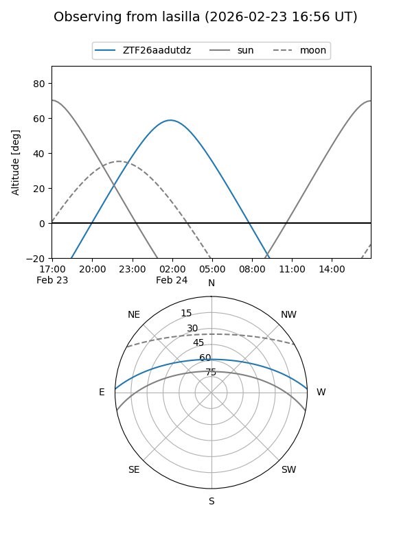
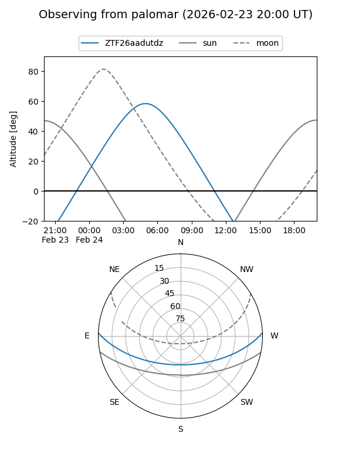

ZTF26aadutdz
Target ZTF26aadutdz at 2026-02-24 09:08
Aliases and brokers:
FINK: link
Lasair: link
ALeRCE: link
alt names
ZTF26aadutdz (ztf,fink_ztf)
Coordinates:
equatorial (ra, dec) = 111.0556,+1.88078
equatorial (HMS+DMS) = 07:24:13.34,+01:52:50.81
galactic (l, b) = (215.0023,+8.15059)
Flags:
Photometry:
last ztfg=19.32, ztfr=18.96
1 ztfg, 1 ztfr detections
Lightcurve

Visibility


Additional plots